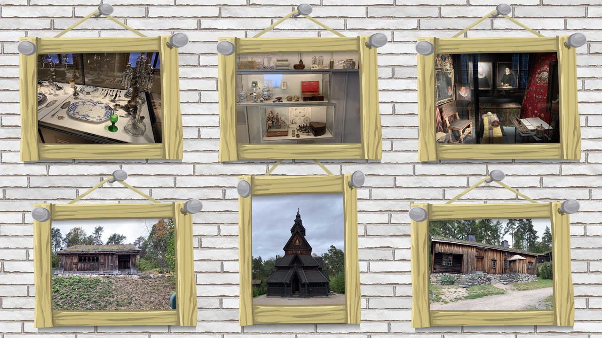
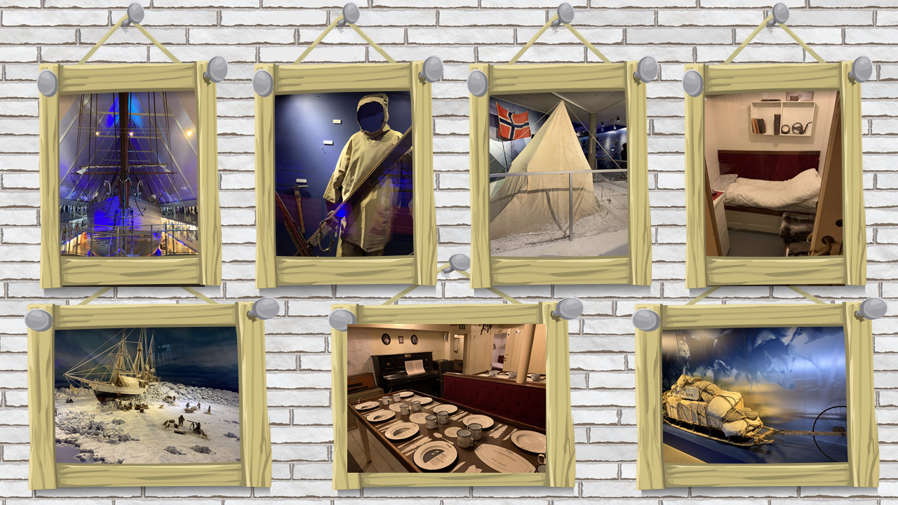
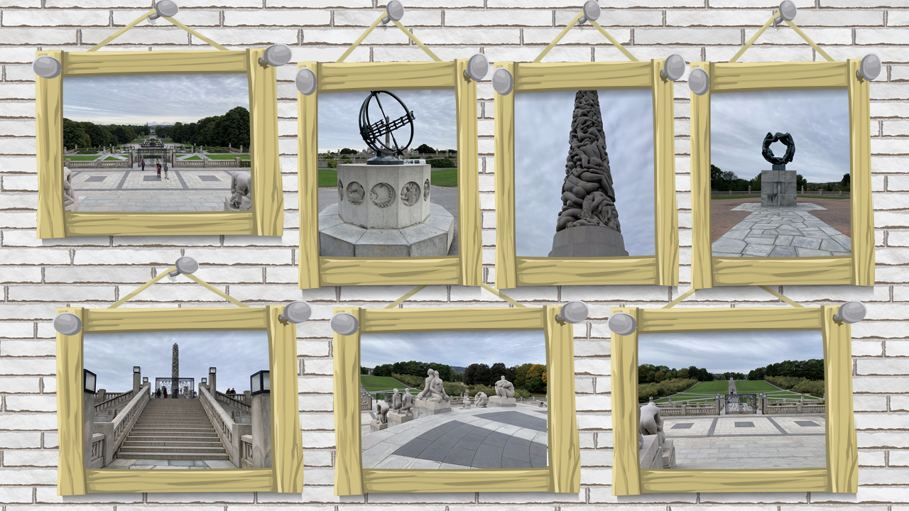
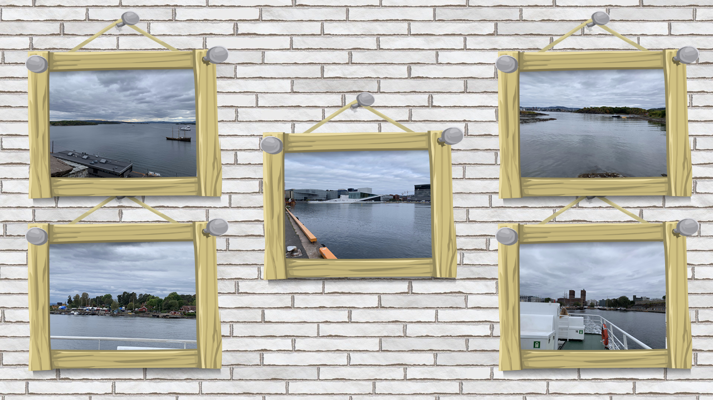

Impressions from the Nordic Fjord Capital
The Norwegian capital of Oslo captivates visitors with its seamless fusion of cutting-edge modern architecture, pristine fjord landscapes, sustainable urban infrastructure, and rich cultural history.
Featured Destinations & Gallery

Norsk Folkemuseum
Traditional Norwegian wooden architecture and historic stave churches spanning the Middle Ages to modern times on the Bygdøy Peninsula.

Fram Polar Ship Museum
The epic history of Arctic and Antarctic explorations by Fridtjof Nansen, Otto Sverdrup, and Roald Amundsen aboard the historic vessel Fram.

Vigelandsanlegget
The world's largest sculpture park by a single artist, featuring over 200 granite and bronze figures capturing the full cycle of human emotion and life.

Oslo Opera House & Fjord Walk
Walkable angled white Italian marble roof with panoramic fjord views, accompanied by open-air social Salsa and Bachata dancing in front of the waterfront.